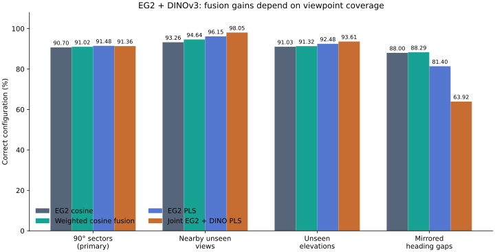
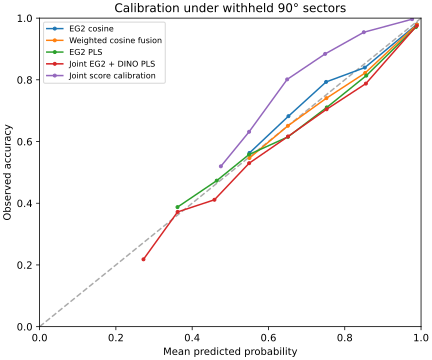

Do EG2 and DINOv3 work better together?
Sometimes. Joint PLS improves nearby-view matching, but it does not beat EG2 PLS on the primary test of entirely withheld viewing sectors.
Across 43,200 withheld-sector queries, fusion repaired 2,469 errors and introduced 2,522. Across wider mirrored gaps, joint PLS fell to 63.92%. There is no general fusion upgrade here.
Targets are 20 known rendered mesh/paint configurations. This does not test distinct physical vehicles with the same model and paint, or an operational tracker.
Compare the same held-out views
Bars start at 0%. Each metric uses the same top-1 configuration prediction, reduced to type or source paint where selected. These are not separate trained feature branches.
| Method | Correct | NLL ↓ | Brier ↓ | Repairs | Regressions | Δ vs selected single |
|---|
Repairs and regressions compare with the single-encoder method chosen on tuning views: EG2 PLS in every condition. NLL and Brier are 20-way class scores. Temperatures use separate calibration views. Small differences have no significance claim.
Where fusion helps—and where it breaks

Joint PLS reaches 98.05% on nearby unseen views (EG2 PLS: 96.15%) and 93.61% on withheld elevations (92.48%). The validation views did not predict its severe failure across mirrored gaps. Viewpoint coverage matters as much as the encoder combination.
Download SVG · PNGInspect actual repairs and regressions
Primary-sector examples: first two distinct true configurations in each fold and outcome. Images are the exact query crops. This is an illustrative selection; the counts above include all queries.
What this says about Bayesian matching
We also fitted a joint logistic model to both cosine scores, using separate calibration views. It reached 90.34% on the primary test, below raw EG2 cosine at 90.70%. Its class NLL was worse, too: 0.257 vs 0.223.
The logit is a same-configuration score likelihood-ratio surrogate under balanced training. It is not yet a physical-identity likelihood for MHT. Both encoders see the same crop, so their evidence is correlated; blindly multiplying their probabilities would double-count information.
Calibration and candidate priors
Binary calibration balances same/different configuration pairs, giving an effective 1/2 training prior. Saved binary metrics explicitly adjust to a 1/20 candidate prior. The table uses 20-way softmax class scores, a separate metric. Available-view calibration can fail on withheld angles.

Ten fixed probability bins; bins with fewer than 50 rows are omitted from this figure. All bin counts are in results.json. No independent-frame confidence intervals.
Exactly what was compared
Full normalized 768D EG2 + 768D DINOv3 features from the same source crops. Joint PLS concatenates the two blocks with equal scaling. The explorer's 3D PCA/PLS coordinates are not used as inputs.
The 43,200 nonpolar views come from the complete 50,400-scan catalog. Polar views and the explorer's 2,808 Sim2 references are outside this experiment. The four test families reuse views and are reported separately.
Fit, tune, calibrate, then test
Gallery views fit PLS; separate tuning views select the fusion weight and 4/16/64 PLS components. A third set fits calibration. Query labels only score predictions. Heading sectors have a 5° guard; elevation folds withhold an entire elevation. No refitting uses tuning or calibration rows.
Raw cosine uses the best gallery view per configuration. Weighted fusion combines each encoder's configuration scores; their best gallery views can differ. Joint PLS predicts one-hot configuration targets, not guaranteed independent shape/color factors. This is an exploratory follow-up on an already inspected dataset, frozen before these fusion fits.
Every condition and selection
| Condition | DINO weight | EG2 PLS | DINO PLS | Joint PLS | Chosen single |
|---|
Verification replayed all 13 conditions, checked 832 cosine queries independently and exactly reproduced the historical EG2 cosine scores. Seven numerical and split-isolation tests passed.